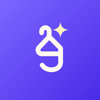

Gardro
Screenshot any outfit, save the pieces, mix them with yours and try the look on.

We build apps and agentic AI systems.
A small studio in Istanbul. Each app does one job, carefully.

Screenshot any outfit, save the pieces, mix them with yours and try the look on.